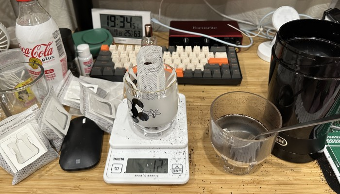
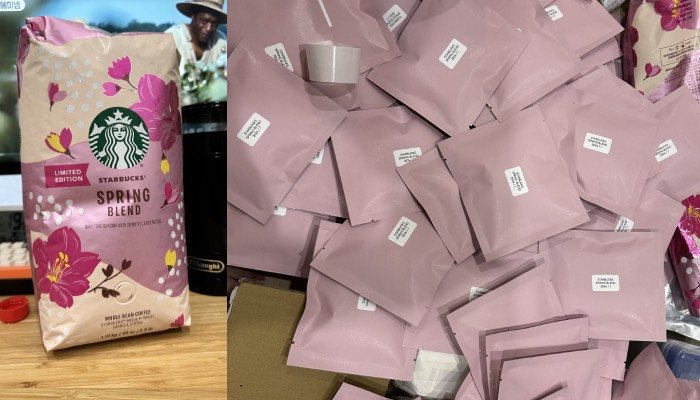
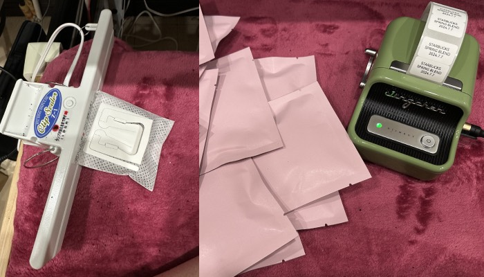

예전에 욕심내서 샀던 봄한정 커피를 여름에서야 꺼냈다.
저렇게 대용량으로 사서 그냥 갈아먹으면 향이 다 날아가버리기때문에,
오래두고 먹기 (사서 고생)위해서 오랫만에 드립백만들기 도구들 발굴함;;

내가 파는곳을 못찾아서인지 몰라도, 일제인데 왠지 한국이 더 저렴했던 포장용 백들을 꺼내서
원하는 농도에 따라 8에서 12그람정도로 계량한뒤에 열로 접착하면됨.

그냥 사먹는게 편한거 같긴한데;
이렇게 만들어먹으면 약간 저렴하고, 파는것 보다 더 맛이있긴함.
